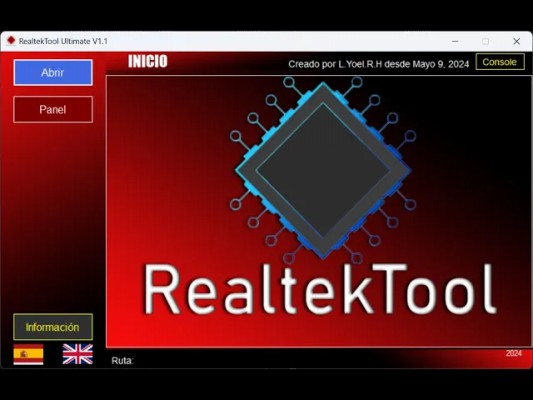

Nuestros Softwares

Console TVFix Pro 27 USD
Aplicación avanzada diseñada para la comunicación con Smart TVs a través de puertos seriales.

MstarTool Basic 17 USD
Herramientas básicas para manejar firmwares de microprocesadores Mstar.
MstarTool Ultimate 35 USD
Versión avanzada con herramientas para la modificación de firmwares de microprocesadores Mstar.
MstarTool Professional 50 USD
Software profesional para modificación y reparación de Smart TVs con tecnología Mstar.
MstarTool Packer/Unpacker 11 USD
Empaque y desempaque de dumps de firmwares Mstar de forma fácil y rápida.

RealtekTool Ultimate 17 USD
Software especializado en firmwares de microprocesadores Realtek.

Mediatek Bootloader Tool 6 USD
Herramienta para la extracción de bootloaders de firmwares Mediatek.